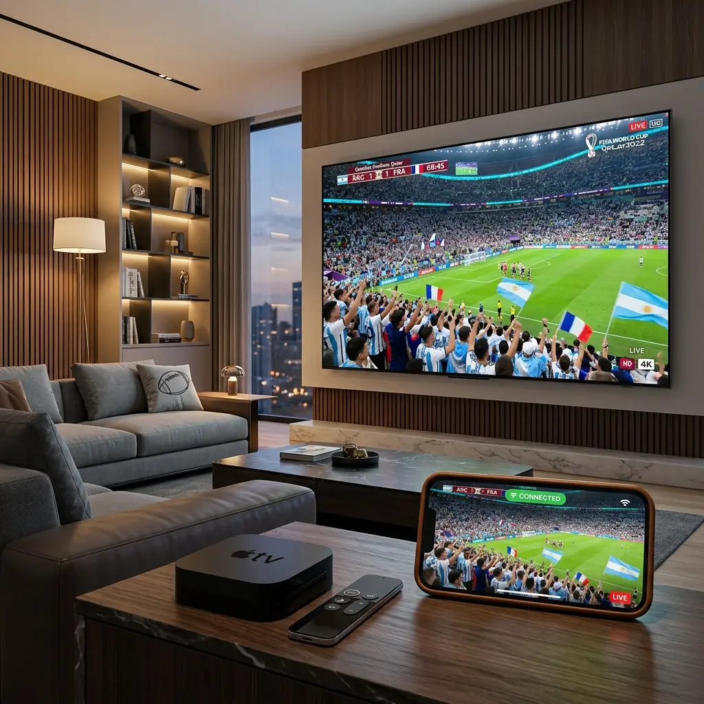

Welcome to the ultimate, definitive guide for 2026 on how to unlock the full potential of your high-end Smart TV. You have invested thousands of dollars into a breathtaking Samsung QLED or a mesmerizing LG OLED display. The colors are vibrant, the contrast is infinite, and the refresh rates are perfectly suited for fast-paced action. However, to truly harness the power of these incredible cinematic displays, you need more than just standard, overpriced cable television. You need the limitless freedom of premium Internet Protocol Television (IPTV), and to orchestrate that experience flawlessly, you need the right software.
Enter IPTV Smarters Pro. For years, this application has stood as the undisputed king of IPTV media players. It is globally recognized for its incredibly intuitive, user-friendly interface, its robust compatibility with nearly every major IPTV provider, and its powerful feature set that rivals the most expensive set-top boxes. It seamlessly manages Live TV, Video on Demand (VOD) movies, massive television series libraries, and complex multi-screen setups without breaking a sweat.
For a flawless, premium 4K buffer-free experience, we highly recommend pairing your setup with a provider like ottocean. The combination of our high-speed, dedicated servers and the versatile Smarters Pro interface is guaranteed to transform your living room into an absolute entertainment powerhouse.
The 2026 Smart TV Dilemma: The Challenge of IPTV Apps
Before diving into the precise, step-by-step installation instructions, it is absolutely critical to address the elephant in the room regarding Smart TVs in 2026. If you have recently turned on your Samsung or LG television, navigated to the official app store, and searched for "IPTV Smarters Pro," there is a very high probability that you came up empty-handed. You might have found generic, subpar imitations, but the official app seems to have vanished. Why does this happen?
The core issue lies in the complex, often frustrating ecosystem of proprietary Smart TV operating systems. Samsung utilizes its own closed-source Tizen OS, while LG relies on its proprietary webOS platform. These are fundamentally different from the open-source Android TV ecosystem (found on Sony TVs or Nvidia Shields) or the Fire OS ecosystem.
Over the past few years, immense pressure from major traditional cable conglomerates and stringent international copyright enforcement agencies has forced television manufacturers into a corner. To avoid massive legal liabilities, Samsung and LG routinely, and often aggressively, purge dedicated IPTV player applications from their official regional app stores. They execute sweeping takedowns, instantly removing popular apps without warning.
Furthermore, because these applications are frequently removed, developers struggle to push necessary software updates directly through the official channels. This leads to the app either completely disappearing from the store in specific countries (like the US, UK, or Australia) or becoming outdated and incompatible with the latest TV firmware.
However, you do not need to panic. The Android community and the IPTV developer networks are incredibly resilient. While the direct path through the official store might be blocked, there are completely legal, safe, and highly effective methods to install IPTV Smarters Pro on both Samsung and LG televisions. This guide will walk you through every single method, from the easiest official route to the slightly more technical sideloading workarounds.
If you find that your Smart TV is simply too restrictive, you might want to consider upgrading your hardware entirely. Check out our exhaustive Firestick 4K Max vs Nvidia Shield guide to discover why dedicated streaming boxes often provide a superior, unrestricted experience.
How to Setup IPTV Smarters Pro on Samsung Smart TVs (Tizen OS)
Samsung’s Tizen operating system is incredibly fast and sleek, but its closed nature requires specific approaches for app installation. We will start with the easiest method and progress to the more advanced techniques if the first one fails.
Method 1: The Official App Store Search (If Available)
Depending entirely on your geographical region (your TV's selected country code during initial setup) and the current state of Samsung's App Store moderation, you might still get lucky. This is always the first step you should attempt.
- Power on your Samsung Smart TV and ensure it has a stable internet connection.
- Press the Home button on your Samsung remote control to bring up the bottom navigation bar.
- Navigate to the left and select the Apps icon (it usually looks like four small squares).
- In the top right corner of the Apps screen, select the Search icon (the magnifying glass).
- Using the on-screen keyboard, carefully type IPTV Smarters Pro.
- If the official app appears in the search results (look for the recognizable blue and white Smarters logo), select it.
- Click the Install button. The application will download and automatically add itself to your Home screen ribbon.
Note: If you search for the app and see dozens of results with similar names but slightly altered logos, do not install them. These are often clone apps loaded with intrusive advertisements or, worse, malware designed to steal your IPTV credentials.
Method 2: The USB Sideloading Workaround (Most Reliable)
If the official app store search yields no results, or only returns cheap clones, you must use the USB sideloading method. This is a very common practice for Tizen OS and allows you to manually install the official widget file directly from the developer.
- Format a USB Drive: Take a standard USB flash drive. Plug it into your computer (Windows or Mac). You must format this drive to either FAT32 or exFAT. NTFS format will often not be recognized by older Samsung televisions.
- Create the Required Folder: Open the freshly formatted USB drive on your computer. Create a new folder at the root of the drive and name it exactly: userwidget. The spelling and lowercase letters are critical. If the folder is not named correctly, the TV will completely ignore the files.
- Download the Widget File: Open your web browser and navigate to the official IPTV Smarters website (or a highly trusted IPTV community forum). Locate the specific download section for Samsung Tizen. You need to download the file that ends in the .wgt extension. Do not download the .apk file, as that is strictly for Android devices.
- Transfer the File: Copy the downloaded .wgt file and paste it directly inside the userwidget folder you created on the USB drive.
- Connect to the TV: Safely eject the USB drive from your computer. Go to your Samsung Smart TV, ensure it is powered on and displaying the home screen. Locate a USB port on the back of the TV (or on the One Connect box if your model has one) and insert the drive.
- Automatic Installation: Samsung Tizen is designed to automatically scan inserted USB drives for the 'userwidget' folder. You should see a small notification pop up in the top corner of the screen indicating that a new application is being installed. Wait a few moments. Once completed, the Smarters Pro app will appear in your Apps list. You can now remove the USB drive.
Method 3: Developer Mode Installation (Advanced)
If the USB method fails (which occasionally happens on the newest 2026 Tizen firmware updates due to heightened security protocols), you may need to enable Developer Mode and push the app directly via a PC utilizing the Tizen Studio software. This is a complex process involving IP addresses and command-line interfaces. For the vast majority of users, if the USB method fails, we strongly recommend purchasing an external Android device (like a Firestick) rather than risking the complex Developer Mode setup which could void your warranty if executed incorrectly.
How to Setup IPTV Smarters Pro on LG Smart TVs (webOS)
LG's webOS is generally considered more lenient than Samsung's Tizen, but it still suffers from regional purges. The installation process is slightly different but highly manageable.
Official LG Content Store Installation
Fortunately, LG has historically kept IPTV Smarters Pro available in their official store much longer than Samsung. This is the primary method for LG users.
- Turn on your LG Smart TV and press the Home button on your Magic Remote.
- Navigate through the ribbon menu and select the LG Content Store (or the 'Apps' section on newer webOS versions).
- Select the Search icon located at the top of the screen.
- Type IPTV Smarters Pro into the search bar.
- Select the official application from the results. Verify the developer name (usually WHMCS SMARTERS or a registered corporate entity) to avoid clones.
- Click Install. Once the installation is finished, click Launch to open the app.
Troubleshooting Tip: If the app does not appear in your specific country's LG Content Store, you can actually change your TV's region. Go to Settings > General > Location > LG Services Country. Change it to a country where the app is known to be available (e.g., Mexico or Brazil). The TV will restart. You can then download the app. Once installed, you can change your region back to your actual location, and the app will remain installed.
Configuring IPTV Smarters Pro: The Perfect Setup
Congratulations! You have successfully bypassed the roadblocks and installed the application on your Smart TV. Now comes the most critical part: configuring it to connect to your premium IPTV provider. A beautiful TV and great software mean nothing without the right data.
When you first launch IPTV Smarters Pro, you will be greeted by a Terms of Service screen (Accept it) and then presented with several login options. The application offers four distinct ways to connect, but we will focus on the absolute best and most reliable method.
Entering M3U URLs and Xtream Codes API
While you can select "Load Your Playlist or File/URL," this is the older, clunkier method. The M3U URL is often extremely long and prone to typing errors when using a TV remote. The absolute best method is the Xtream Codes API.
- On the main login screen, select the option labeled: Login with Xtream Codes API.
- You will be presented with a screen requiring four specific fields. This information is provided to you by your IPTV service immediately after purchasing a subscription or starting a trial.
- Any Name: This is purely for your reference. Type whatever you want (e.g., "OttOcean Premium", "My IPTV", "Sports Setup").
- Username: Carefully enter the exact username provided by your service. This is case-sensitive.
- Password: Enter the exact password provided. Use the "show password" eye icon to ensure there are no typos.
- URL: Enter the precise portal URL provided by your service. It must include "http://" or "https://" and the correct port number at the end (e.g., http://premium-line.com:8080). A single missed character here will result in total failure.
- Once all four fields are perfectly entered, click the Add User button.
- The application will establish a connection to the server. If successful, you will see a screen displaying "Downloading Channels, Movies, Series." This process can take a few minutes depending on the massive size of the provider's library. Do not interrupt this process.
Connecting Your EPG (Electronic Program Guide)
One of the massive advantages of using the Xtream Codes API login method instead of a standard M3U URL is that it automatically handles the EPG data. The server automatically pushes the TV guide information directly to the Smarters Pro app. Once the initial download completes, you simply click on the "Live TV" section, and your comprehensive, categorized TV guide will be ready to browse.
If you prefer an Apple ecosystem, you can also learn how to set this up by reading our comprehensive Apple TV IPTV Guide.
Performance Optimization: Best Settings for Buffer-Free 4K Streaming
To ensure your Samsung or LG TV leverages its processing power to deliver the smoothest possible 4K sports streams without buffering, you must adjust a few internal settings within the Smarters Pro application.
- Navigate to the top right corner of the Smarters Pro home screen and click the Settings gear icon.
- Select Player Selection. Ensure that the built-in media player (usually ExoPlayer or VLC) is selected. Smarters Pro generally handles media natively very well.
- Select Stream Format. If you are experiencing strange playback issues or the channel is skipping, try changing the format from MPEGTS to HLS (or vice versa). Different providers use different default streaming formats, and matching your app to the provider's optimal output can drastically improve stability.
- Select Automation. Enable the option to "Auto-Update Live TV and VOD on Application Start." This ensures that every time you open the app, you immediately receive any new channels or newly added movies from your provider.
- Clear Cache: This is the most vital maintenance step. Smart TVs have very limited internal RAM compared to dedicated boxes. Over time, the EPG data cache will bloat and cause the app to slow down or crash. Once a week, go to Settings > Clear Cache and clear the data. This will keep the application running lightning fast.
Advanced Troubleshooting: Fixing Common Smarters Pro Errors
Even with a perfect installation, you might encounter occasional technical hiccups. Here is how to instantly resolve the most common errors experienced on Smart TVs.
"Login Failed" or "Invalid Details"
This is overwhelmingly the most common error. 99% of the time, this is a simple user input error. The Xtream Codes API requires absolute perfection. A single accidental space after your username, a capitalized letter that should be lowercase in the password, or a missing colon in the server URL will cause this error. Carefully re-type the credentials. If you are 100% sure the spelling is correct, the issue is that your ISP is actively blocking the IPTV server URL. You will need to implement a VPN router setup to bypass this block.
The Dreaded "Black Screen" with Audio
You select a channel, you can hear the commentators speaking perfectly clearly, but the screen remains entirely black. This occurs when the specific video codec being broadcast is not supported by your TV's internal hardware decoder. Go into the Smarters Pro Settings > Player Selection and switch from Hardware Decoding to Software Decoding. This forces the app to process the video using raw CPU power rather than the TV's dedicated video chip, which usually resolves the codec incompatibility instantly.
EPG Not Loading or Showing "No Information"
First, be patient. EPG servers update periodically, and there may be a temporary outage on the provider's side. If the guide remains empty after an hour, go to Settings > EPG and click "Refresh EPG Data." If this fails, the problem is likely that your TV's internal time and date settings are incorrect. The EPG relies entirely on precise timezone synchronization. Exit the app, go to your Samsung or LG main TV settings, and ensure your timezone is set to "Automatic" and accurately reflects your current location.
Quick Comparison: IPTV Smarters Pro vs. The Alternatives
While Smarters Pro is fantastic, the Smart TV ecosystem has several other notable players. If you are struggling with Smarters, you might consider these premium alternatives.
| Application | Best Feature | User Interface (UI) | Pricing Model |
|---|---|---|---|
| IPTV Smarters Pro | Multi-screen viewing, deep VOD categorization | Highly intuitive, traditional box layout | Free (Premium features available) |
| IBO Player | Lightning-fast performance on older, slower Smart TVs | Modern, minimalist, extremely fast to navigate | Paid (One-time lifetime activation fee) |
| Flix IPTV | Incredible visual presentation for movies and series posters | Cinematic, visually rich, Netflix-style layout | Paid (One-time lifetime activation fee) |
| Tivimate (Android Only) | The absolute best EPG management and recording features | Premium, heavily customizable | Paid Subscription (Not natively available on Tizen/webOS) |
Frequently Asked Questions (FAQ)
Yes, the core application of IPTV Smarters Pro is completely free to download and use. It allows you to watch Live TV and VOD. They do offer a "Premium" version which unlocks advanced features like Master Search, Picture-in-Picture, and multi-screen, but the free version is more than sufficient for 95% of users.
While the app itself does not require a VPN, using an IPTV service almost always does. Internet Service Providers (ISPs) actively monitor traffic and will frequently throttle or completely block connections to major IPTV servers, especially during high-profile sporting events. A VPN encrypts your traffic, bypassing these artificial blocks and ensuring your stream remains completely buffer-free.
If your internet speed is fast (over 50 Mbps), the buffering is rarely the app's fault. It is usually caused by one of three things: (1) Your TV is connected via a weak Wi-Fi signal (always use an Ethernet cable), (2) Your ISP is throttling your connection (use a VPN), or (3) Your IPTV provider has overloaded, cheap servers. You need a premium provider.
Unfortunately, no. The native versions of IPTV Smarters Pro built for Tizen and webOS do not currently support local PVR (recording) functionality. The operating systems are too locked down to easily write massive video files to external USB drives through third-party apps. If recording is essential, you must purchase an Android TV box.
Absolutely not. This is the most common misconception. IPTV Smarters Pro is merely a media player—an empty vessel. It is exactly like VLC Media Player on your computer. It contains zero content, zero live channels, and zero movies. You must separately purchase a subscription from a high-quality provider to populate the app with content.
The Final Step: Unlock the Ultimate 4K Experience
You now possess the knowledge to perfectly install and configure the world's best IPTV software on your premium Smart TV. The only thing missing is the world-class content to fill it. Stop settling for pixelated streams, missing channels, and frustrating buffering during the biggest moments in sports. Elevate your entire home theater experience today.
Experience an absolutely massive library of 15,000+ flawless, uncompressed 4K Live channels, tens of thousands of instantly streaming VOD movies, and every premium sports network on the planet. Our dedicated, load-balanced servers are engineered specifically to integrate flawlessly with IPTV Smarters Pro, guaranteeing a viewing experience that traditional cable simply cannot match.
Claim Your 24H Free Trial Now